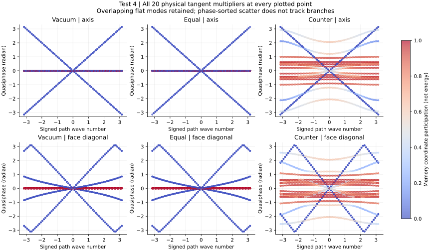
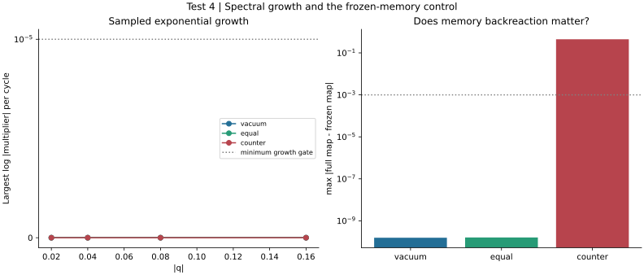
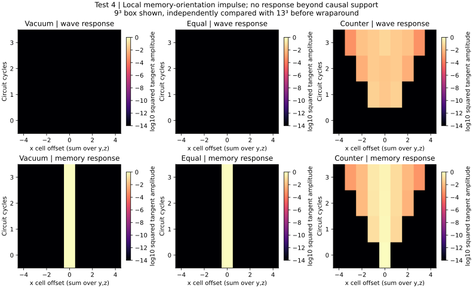
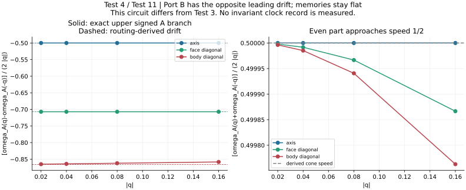
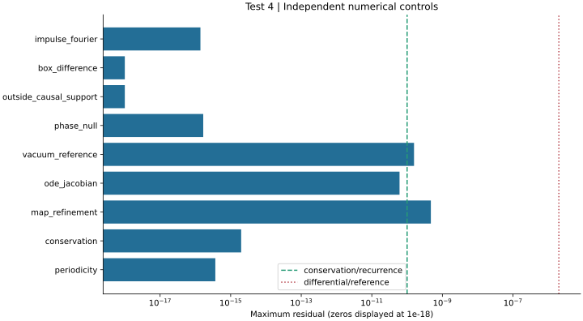

# Signal Space / GROSS Test 4 Technical execution: completed. Scientific classification: fail. Run: run-5a55cb5041050589 Analysis: analysis-0001-bceef551 Solver commit: 2e0a17228d380421248fabf46bf17de5c9e5fbd7 Config SHA-256: 7bfac7c0155a8c4671077d63f694ff67508833dcf8a8d02e49cd7f7a2d6b2ae7 Renderer commit: 2e0a17228d380421248fabf46bf17de5c9e5fbd7 Three exact backgrounds, twenty physical tangent dimensions, six reciprocal gates. This is an explicit new routing ansatz, not a claim of equivalence to the Test 3 reduced stencil. Numerical controls and scientific cone/stability hypotheses are separate. coverage: pass; 17940 periodicity: pass; 3.673940397442059e-16 conservation: pass; 1.9842042680358083e-15 linearization: pass; 4.712388037457356e-10 vacuum-reference: pass; 1.5708068441136224e-10 phase-quotient: pass; 1.6690549615570372e-16 causal-domain: pass; 1.3897676904923465e-16 backreaction: pass; 0.44444444447793086 vacuum-common-cone: fail; 1.1220524509525376e-10 counter-stability: unresolved; 3.9307668230686044e-11 Strong all-sector vacuum geometry fails only if the numerical controls pass. The equal nonzero preparation has the same decoupling. Counter stability and generic nonzero backgrounds remain separate questions. No autonomous clock, material-response completion or emergent spacetime is established. Next: derive a non-collinear unequal-port periodic background with active memory response, then test its complete tangent spectrum and withheld sectors. ## complete-spectrum Question: Do all physical wave and memory variations propagate on one cone? Reading: All 20 multipliers are retained. Vacuum has twelve stationary physical memory dimensions; memory identity residual 1.12e-10. Strong vacuum cone status: fail. Significance: Propagating wave sectors do not by themselves define one geometry for the complete physical state. The equal nonzero preparation retains the vacuum obstruction. Limitation: The displayed axis/diagonal sections are finite samples. Degenerate eigenvector colors can change basis, and neither quasiphase nor memory participation is a measured clock record. ## growth-backreaction Question: Does the nonzero background activate memory response, and is exponential growth detected? Reading: Counter full/frozen difference 0.44444; low-q maximum growth 3.9308e-11. Counter stability: unresolved. Significance: The opposing-port background can distinguish reciprocal memory dynamics from imposed projector coefficients. Growth above numerical uncertainty would reject its stability. Limitation: No growth detection is not a stability proof; Jordan effects, untested wavevectors and nonlinear perturbations remain. Frozen memory is an intervention, not a gauge transformation. ## causal-memory-response Question: Where can a local physical memory perturbation influence the circuit? Reading: Outside-support amplitude 0; two-box difference 0; impulse Fourier discrepancy 1.39e-16. Significance: The explicit local incidence constrains response. A physical orientation perturbation can remain at rest or seed a wave depending on background. Limitation: Three cycles of the linearized circuit, with one impulse direction. Squared tangent amplitude is not physical energy. Projection sums over transverse cells. ## directional-sectors Question: Does this specified routing generate leading drift or only finite-band asymmetry? Reading: The exact A-port odd/even phases are compared with v_A=-(1,1,1)/2 and D=I/4; B has opposite drift. All 26 directions and four radii remain in the data. Significance: Leading drift follows from this explicit incidence. A single common coordinate shift cannot erase opposite drift in two physical port sectors. Directional asymmetry alone is not grounds to reject a geometric signal sector. Limitation: Vacuum/equal background wave sectors only. Signed frequency pairing is used because some directions are supercritical; no clock calibration, invariant record or full operational Test 11. ## accuracy-audit Question: Are recurrence, differential accuracy, phase redundancy and local conservation controlled? Reading: Periodicity 3.67e-16; conservation 1.98e-15; differential refinement 4.71e-10; independent ODE Jacobian 6.11e-11. Significance: The gates check self-consistent backgrounds, complete differential maps, exact phase redundancy and local conserved ledgers before physical interpretation. Limitation: Deterministic tolerances are not statistical confidence. No kinetic positivity theorem, globally conserved circuit Hamiltonian, or spacetime momentum is asserted.




